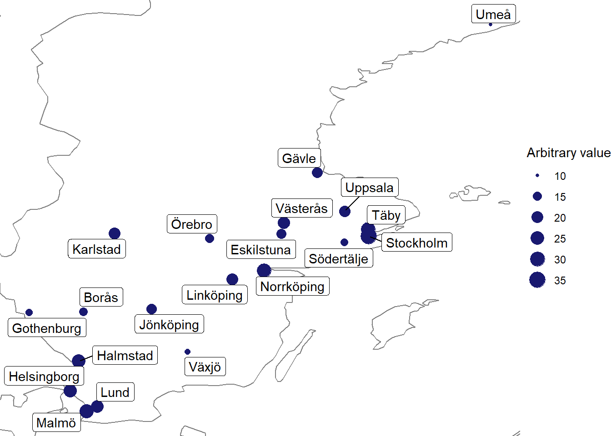

install.packages('tidygeocoder')Geocoding: two ways
A post about geocoding place names using R and python to access the OSM and Google Maps geocoding APIs.
Introduction
Locating places of interest on a map is an important task in many economic history projects. This tutorial will show you how to geocode a list of addresses.
I will use both R and python to show you how to do this, depending on your preference and what you are most comfortable with.

Getting started
There are many engines that you can use to geocode place names or addresses to coordinates, some popular engines include the Open Street Map Nominatim API and the Google Maps API.
Conceptually, there is a distinction between the code that you use to call the engine which gets the coordinates (R or python), and then there is the engine itself (OSM or Google Maps).
| Framework | R (tidygeocoder) & Open Street Map Nominatim API | Python (requests) & Google Maps Geocoding API |
|---|---|---|
| Geocoding Engine | Open Street Map’s Nominatim | Google Maps Geocoding |
| Request Method | Uses the tidygeocoder R package to send requests. |
Uses the requests Python library to send HTTP requests. |
| Cost | Free and open-source, but has usage policies to prevent heavy traffic. | Offers limited free requests, billing is required for extensive usage. |
I use the tidygeocoder package in R, which is free, and the Google Maps Geocoding API in python, which is also free (up to some threshold), but requires an API key from Google and a credit card to sign up.1
You can read about getting an API key here.
Data
For the purpose of this tutorial, I have generated 20 place names to geocode and a column of arbitrary values for visualization.
| Place Name | Arbitrary Value |
|---|---|
| Stockholm | 35 |
| Gothenburg | 12 |
| Malmö | 27 |
| Uppsala | 19 |
| Västerås | 22 |
| Örebro | 15 |
| Linköping | 20 |
| Helsingborg | 24 |
| Norrköping | 28 |
| Jönköping | 17 |
| Lund | 23 |
| Umeå | 10 |
| Gävle | 18 |
| Borås | 14 |
| Eskilstuna | 16 |
| Södertälje | 13 |
| Karlstad | 21 |
| Täby | 29 |
| Växjö | 11 |
| Halmstad | 26 |
R and tidygeocoder
Jesse Cambon has kindly made a package called tidygeocoder available on github.
You can install it on your computer using the following code:
Here is how you geocode a list of addresses using the tidygeocoder package.
Note that lat and long here will be the column names for the coordinates that are returned.
The line method = "osm" specifies that we are using the Open Street Map Nominatim API. Here you can switch to another engine if you prefer.
library(tidyverse) # for data manipulation
library(tidygeocoder) # for geocoding
# Read in data
library(readxl) # for reading excel files
places <- read_excel("data/data_to_geocode.xlsx")
# Geocode places
places_geocoded <- places %>%
geocode(place_name,
method = "osm",
lat = latitude,
long = longitude
)This what the output looks like when the geocoding is complete.
Passing 20 addresses to the Nominatim single address geocoder [===================================] 20/20 (100%) Elapsed: 20s Remaining: 0s
We can visualize the results using the ggplot2 package.
# Find bounds to trim map, adding some padding
bounds <- places_geocoded %>%
summarise(xmin = min(longitude) - 0.1,
xmax = max(longitude) + 0.1,
ymin = min(latitude) - 0.1,
ymax = max(latitude) + 0.1)
# Plot places
ggplot(places_geocoded, aes(longitude, latitude), color = "grey99") +
borders() +
geom_point(aes(size = arbitrary_value), colour = "midnightblue") +
ggrepel::geom_label_repel(aes(label = place_name)) +
theme_void() +
coord_cartesian(xlim = c(bounds$xmin, bounds$xmax),
ylim = c(bounds$ymin, bounds$ymax)) +
labs(size = "Arbitrary value")
Great! We have successfully geocoded our list of addresses.
Geocoding in python
I have created a Colab notebook that shows you how to geocode addresses using the Google Maps Geocoding API in python. You can simply run the code in the notebook to get the coordinates of your own data by providing your own API key and data.
You can have a look at the Colab notebook here
Real world use case
In reality, it will likely not be as simple as running the above code once and getting all the coordinates you need.
You will likely need to do multiple passes, modify addresses, and evaluate the results.
Multiple passes are necessary to maximize the accuracy and success rate of geocoding. The initial pass may not successfully geocode all addresses due to inaccuracies, ambiguities, or limitations of the geocoding tool. By modifying the problematic addresses and doing subsequent passes, you can resolve these issues and geocode more addresses correctly.
For example, an address might fail to geocode because it contains a typo, is too specific, or too ambiguous. By modifying the address to correct the typo or by making it more general or more specific, it might geocode successfully in a subsequent pass.
The term “out of bounds” in the context of geocoding refers to the geocoded results that do not fit within a predefined geographical area or are not reasonable based on prior knowledge. For instance, if you are geocoding addresses in Sweden, any result that lies outside the borders of Sweden would be considered “out of bounds.”
In practical terms, if you know the general area where the addresses should be located (like a specific country or city), you can compare the geocoded results against this area. If the geocoded location falls outside this area, it is considered out of bounds, and you might need to modify the address and try geocoding it again, or use a different geocoding engine that might provide more accurate results.
Here is a diagram that shows the real world process of geocoding in more detail.
stateDiagram-v2
[*] --> FirstPass
FirstPass --> StoreResults: In bounds
FirstPass --> ModifyAddresses: Out of bounds
ModifyAddresses --> SecondPass
SecondPass --> StoreSecondPassResults: In bounds
SecondPass --> Evaluate: Out of bounds
StoreResults --> Evaluate
StoreSecondPassResults --> Evaluate
Evaluate --> ManualGeocode: Handful left
Evaluate --> TryDifferentEngine: Many left
ManualGeocode --> FinalResults
TryDifferentEngine --> FinalResults
FinalResults --> [*]
1. First Pass
- Objective: To attempt an initial conversion of place names or addresses into geographical coordinates.
- Example: If you have a list of street addresses in Sweden, you use a geocoding tool to convert these addresses into geographical coordinates.
- Outcome: Some addresses will be successfully geocoded within the reasonable bounds (i.e., within Sweden), and some may not be (i.e., places outside Sweden).
2. Modify Addresses
- Objective: To modify the addresses that were not successfully geocoded in the first pass.
- Example: If an address, “123 Main St, Stockholm,” fails in the first pass, you might modify it to just “Stockholm” or append the country, “123 Main St, Stockholm, Sweden.”
- Outcome: The modified addresses are ready for the second pass.
3. Second Pass
- Objective: To attempt the conversion again with the modified addresses.
- Outcome: More addresses will be successfully geocoded within the reasonable bounds.
4. Evaluate Results
- Objective: To assess the number of addresses that are left un-geocoded after the second pass.
- Outcome: Determine whether manual geocoding or trying a different geocoding engine is needed.
5. Manual Geocode or Try Different Engine
- Objective: To geocode the remaining un-geocoded addresses.
- Example: If there are only a few addresses left, you might geocode them by hand using online maps. If there are many addresses left, you might switch to a different geocoding engine, e.g., from Open Street Map to Google Maps.
- Outcome: All addresses are successfully geocoded.
6. Final Results
- Objective: To obtain a complete list of geographical coordinates corresponding to the initial list of place names or addresses.
- Outcome: A successfully geocoded list is ready for further use or analysis.
Footnotes
You can also use the Google Maps Geocoding API in R through the
tidygeocoderpackage, but you will still need to sign up for an API key from Google.↩︎